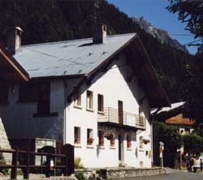

Gîte Ski Station (1100 m)

Département, commune : Haute Savoie, commune de Chamonix
Cartes : AsF© 16 (case I32), IGN Top25 3630 OT pli G1
Situation : quartier du Mollard, près du téléphérique du Brévent. Adresse : 6 route des Moussoux, 74400 Chamonix. Téléphone refuge : 04 50 53 20 25
Propriétaire-Gardienne : Véronique Baronnier
Ouverture et gardiennage : ouvert et gardé du 25/6 au 20/9 et du 20/12 au 15/5, fermé hors ces périodes
Commodités : 57 places (dortoirs à lits non superposés avec matelas, couvertures, oreiller ; sac à viande obligatoire),
salle hors-sacs,
eau potable à l’intérieur.
Accès : en voiture (5 min à pied du centre ville de Chamonix)
Itinéraires à proximité : -
Randonnées à partir du refuge :
guide ou site AsF© : le Brévent, Bellachat, le lac Bleu
autres randonnées : la Flégère (TMB)